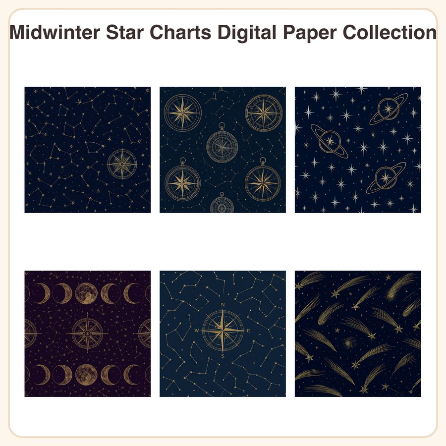

$5.50
View on EtsySkip the snowflakes and plaid this year ❄️ — these celestial star-map patterns bring an elegant, non-cliché winter mood to invitations, journals, and craft projects. What's Included: • 6 seamless patterns, each as a 3072px square JPEG (12x12in, 300dpi) • 6 matching repeatable PNG tiles for seamless tiling in design software • 12 files total Patterns: 1. Antique star chart constellations on deep navy 2. Gold compass rose & astrolabe motifs on midnight blue 3. Sparse silver stars with thin orbit rings on charcoal 4. Moon phase sequence border on deep plum 5. Constellation line drawings connected by dotted gold thread 6. Small comet and shooting star scatter on ink-blue field File Formats & Sizes: • JPEG: 3072x3072px, 300dpi, print-ready at 12x12in • PNG: seamless repeat tiles for scaling to any project size How to Use: Drop straight into Canva, Photoshop, Procreate, or your favorite design app. Use as scrapbook backgrounds, journal pages, invitation backdrops, gift wrap, planner covers, or print at home for cardmaking and stationery projects. License: For personal use and small business commercial use (up to 500 sold items). You may not resell, redistribute, or share the files themselves as-is or as a digital product. A Note on Process: These designs were created in our shop with the help of AI image tools, then refined and prepared for print by hand. This is a fine linework astronomical illustration style — not hand-drawn or watercolor. Instant download — no physical item will be shipped. Please check photos carefully before purchase, as digital files are non-refundable.